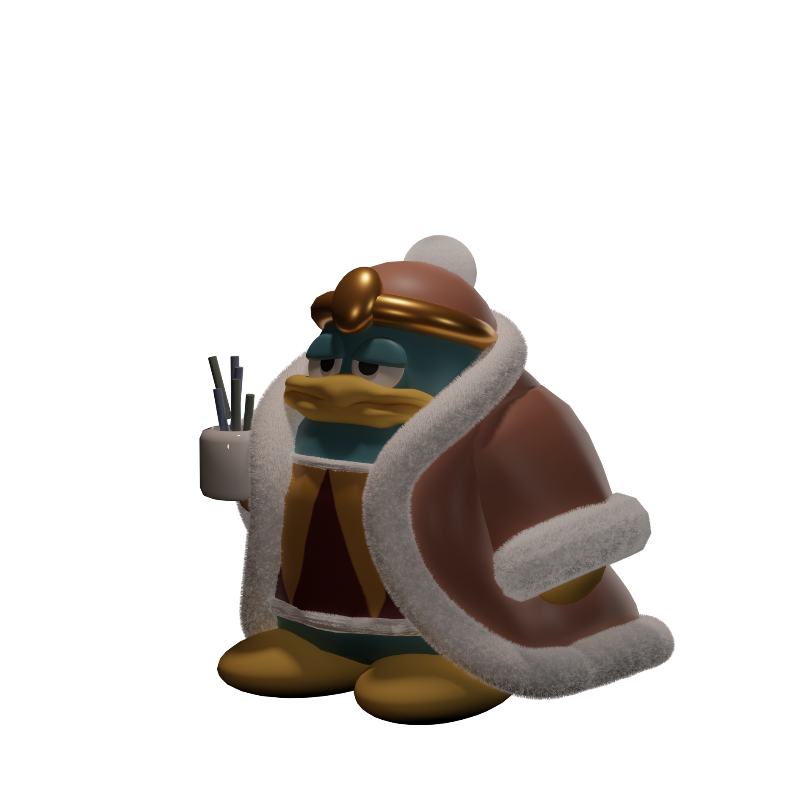
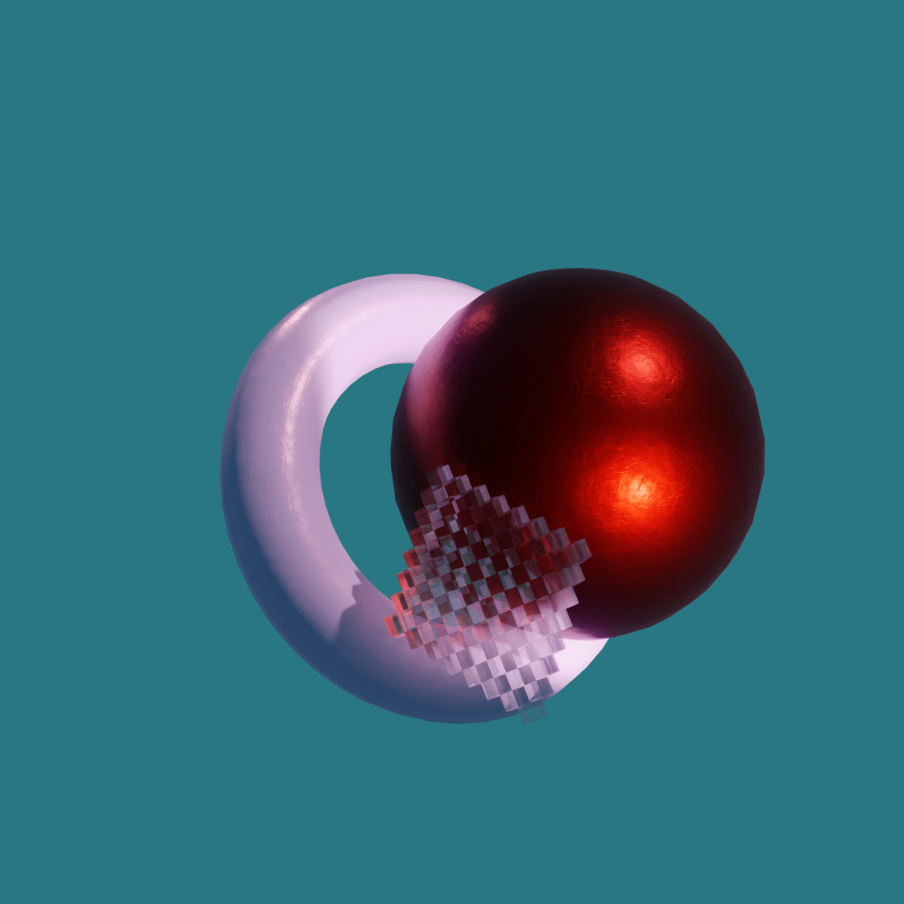

autumngreeenbean/resume/3d.html
< Take me back, please...
Hello World!
3D Work
3D Animation Project: Robot and Milk
3D Loop Animations
November 9, 2020 - Kirby
November 10, 11 - the King Dee Dee

November 8, 2020 - Material practice with Blender
